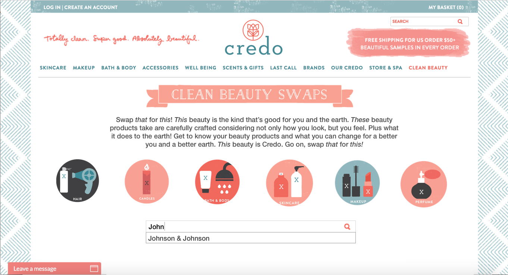
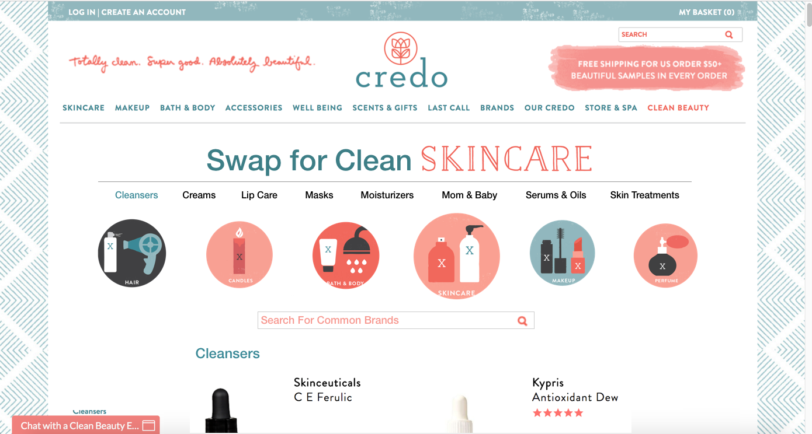

Proposal to client. I was assigned the task of mocking up a new version of Credo's Swap to Save section with updated SEO components and an organized design to create a better user experience.
Sketch, Wireframes
2017
Credo is an organic beauty store. In order to convert more beauty buyers, a section of the website, titled "Swap To Save", has been dedicated to educating potential customers about swapping their current beauty products containing harmful substances for the equivalent organic Credo beauty options.
What kind of beauty lover buys from Credo? One who's environmentally conscious and invested in learning about organic ingredients. In order to convert this user, this section of the website needs to be clear, organized, and crawlable by search engines.
A preliminary evaluation of these webpages revealed many areas for improvement including:
My main goal was to simplify the design and remove supurfluous elements. The first design for this webpage contained only a title, a paragraph of text for direction, and icon categories for navigation. Whenever a user hovered over an icon, the image enlarged slightly. However, after discussing this with the team, it was obvious that the navigation was too simple. For example, there was no option for users to search by brand or to know which products belonged to each category.
I analyzed the feedback from my team and reconfigured the design to include a search bar below the icon category list with the suggested text "Search For Common Brands" and an auto complete function for brands listed within the pages. I also added a horizontal submenu that drops down when a user hovers over a category icon.
The next task was to improve each category page with intuitive navigation and product presentation. Users that select a category from the Swap to Save homepage are directed to a category page. In order to create a continuous experience for the user, the redesigned category pages incorporate a similar navigation and search format as the Swap to Save homepage.
The category pages differ from the homepage in that the horizontal submenu is above the icons. Originally, the submenu was below the icons. But after discussing this format with the team, we concluded the navigation format did not feel intuitive for the user. Since there was no need for an explanation paragraph beneath the title, it made more sense to situate the navigation directly below the title. Clicking on a subcategory will move the user down the page to that section. Typing in a brand name will filter products to show only those brand products in that category, still organized by subcategory.
The beginning of the product list shows just above the fold to encourage users to scroll down. Each subcategory section is titled. Subcategories and products are listed alphabetically to increase the ease and speed with which users can search for products.
Users that began their search process by clicking on a subcategory from the Swap To Save homepage are automatically directed to that section on the correlating category page.
When users type in a brand on the Swap to Save homepage, the homepage will expand to list all those brand organized by subcategory and alphabetically.
Since this project was a proposal for a new client, there are no results to measure success.